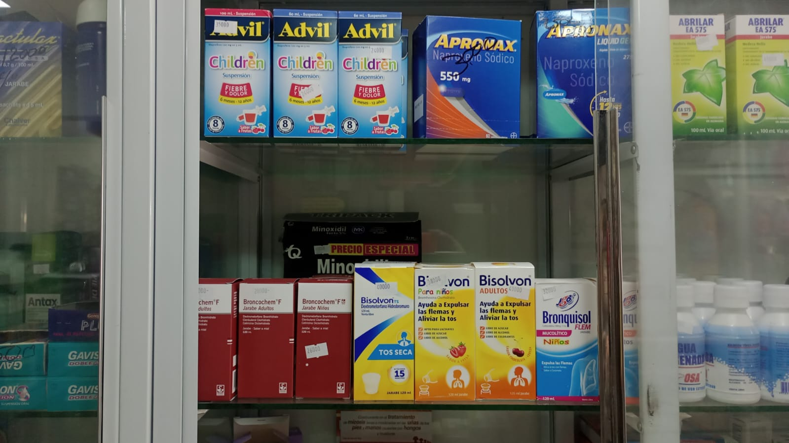
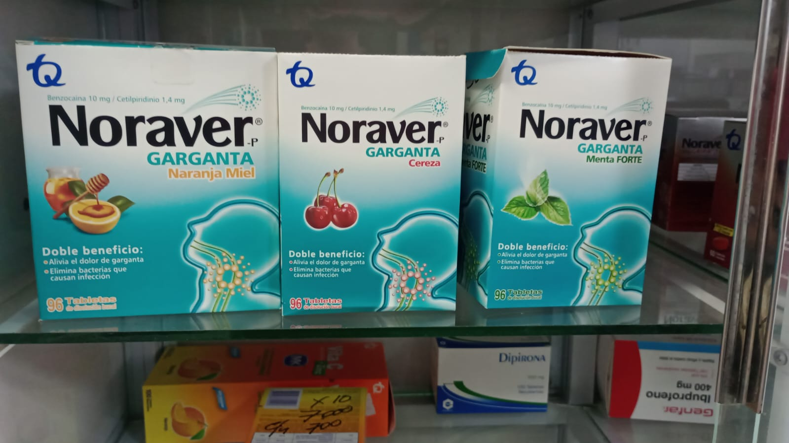
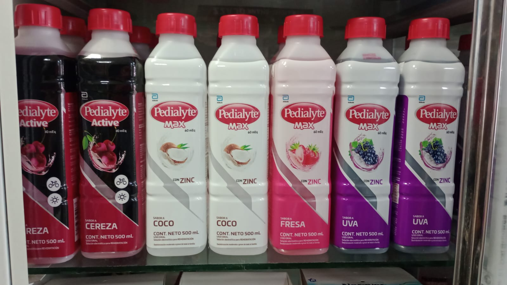
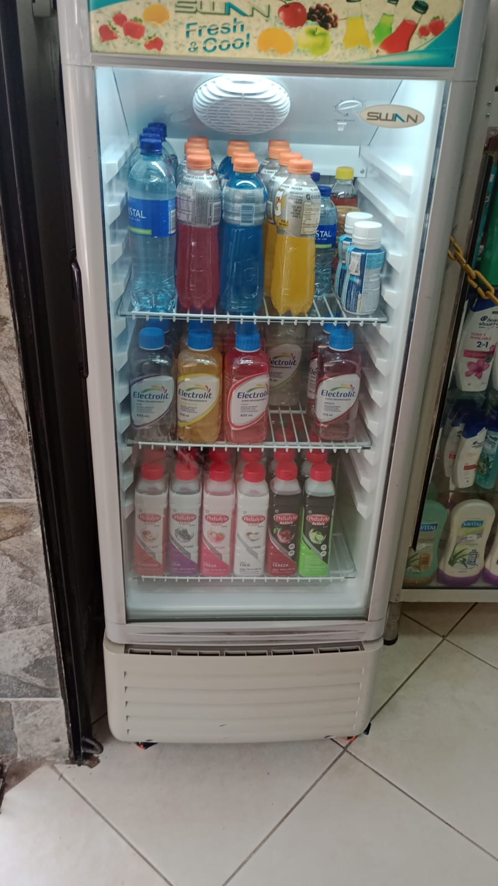
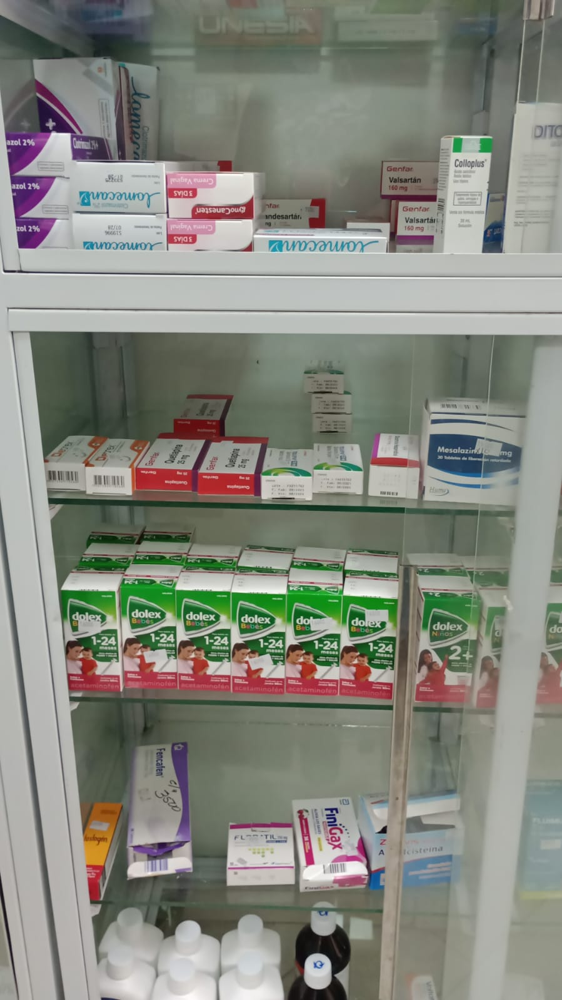
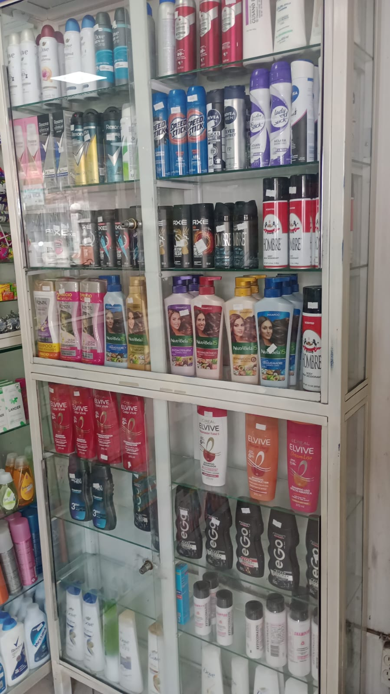
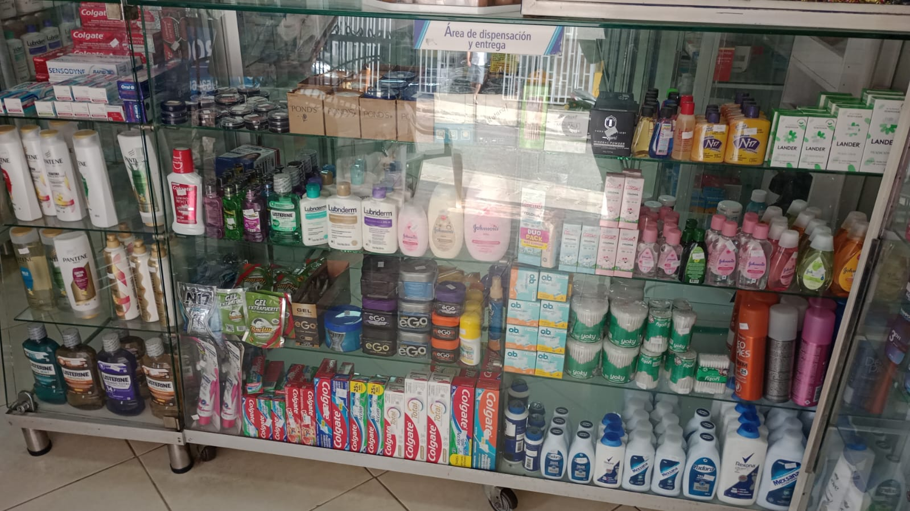
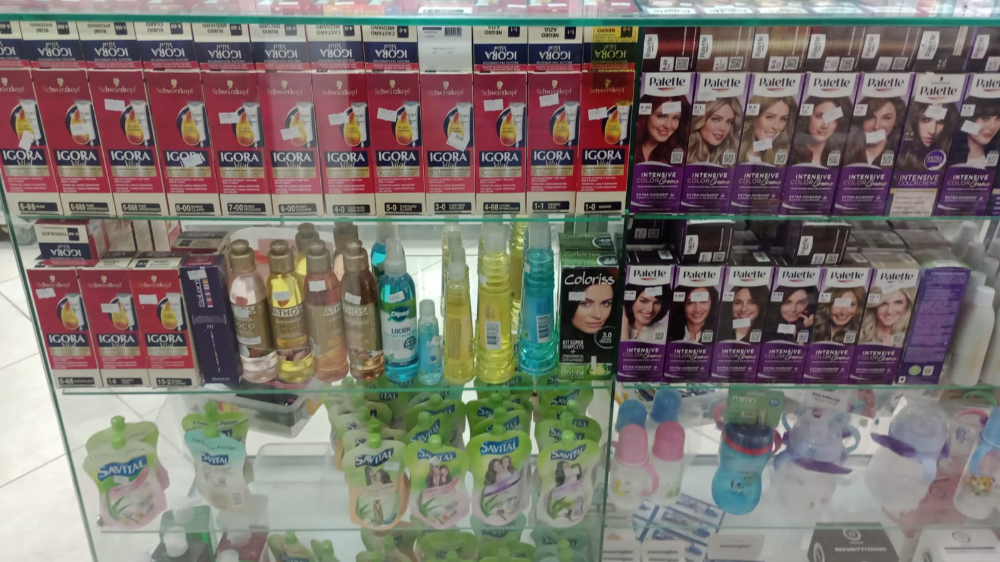

Pediátrico
Advil Children
Alivio para fiebre y malestar infantil según indicación.
MEDICAMENTOS DE BUENA CALIDAD Y GENÉRICOS
Atención directa en mostrador, correcto despacho de fórmulas y amplio surtido diario para el cuidado de toda tu familia.
Consulta disponibilidad directamente en el punto. No manejamos domicilios.

Alivio para fiebre y malestar infantil según indicación.
Naproxeno sódico para dolores y procesos inflamatorios.
Apoyo para aliviar molestias asociadas a la tos y flemas.

Tabletas para dolor de garganta en presentaciones de sabor.

Reposición de electrolitos en variedad de sabores.

Solución de rehidratación oral para mantener el balance hídrico.

Presentaciones infantiles de acetaminofén en vitrina.
Referencias de uso frecuente en nuestra vitrina OTC.

Colgate, Listerine, Rexona, Dove, Speed Stick, Nivea y más.

Elvive, NutriBela, eGo, Savital y líneas de cuidado diario.

Variedad de tonos en coloración capilar y cuidado del cabello.
Lubriderm, Johnson's, Acid Mantle y productos de uso diario.
Elige una de las 4 opciones para ver una orientación rápida:
Para dolores musculares, articulares o molestias generales, en la droguería contamos con opciones de venta libre como Apronax o presentaciones analgésicas en vitrina. Acércate al mostrador para verificar disponibilidad.
Si presentas dolor de cabeza o migraña, consulta directamente en la farmacia para revisar qué alternativa de venta libre se ajusta mejor a tu consulta o si requieres valoración médica.
Para molestias digestivas leves o hidratación, disponemos de sueros como Pedialyte o Electrolit y referencias de vitrina. Si el malestar persiste o es fuerte, busca atención médica.
Para otros síntomas, dudas sobre fórmulas médicas o consultas específicas, por favor consulta directamente en la farmacia en Calle 62 No. 63B - 10, Urbanización El Vergel.
Atención cuidadosa para entregar el producto indicado según tu fórmula o necesidad.
Variedad entre medicamentos de marca y genéricos confiables para el hogar.
En la Calle 62 No. 63B - 10, Urbanización El Vergel, con horarios amplios toda la semana.